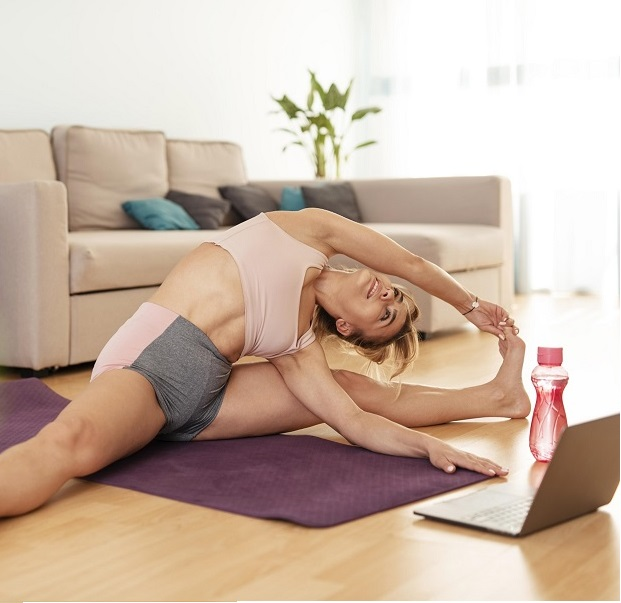

Telerehabilitación
20+ años de experiencia ayudando a personas físicamente activas a reducir el dolor y tratar lesiones ortopédicas y deportivas de raíz.
Más información
Fisioterapia
Utilizamos el poder del movimiento para aliviar el dolor, ayudarte a recuperar tu calidad de vida y regresar a tus actividades favoritas.
Más información
Acupuntura
Tratamos el dolor sin analgésicos, sin efectos secundarios o dependencias. Podrás continuar con las actividades que más disfrutas.
Próximamante